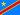

What to expect in February
Is February the right month?
The best month in Brazzaville is July (9.1/10), 1.5 pt higher than February.
Our verdict
Brazzaville, capital of the Republic of the Congo ("Congo-Brazzaville") on the Congo river: 1.8 million inhabitants. Facing Kinshasa DRC rival capital = 2 capitals of different countries separated only by the river = only place in the world where 2 capitals face each other directly, river crossing by ferry 15 min between the 2 cities. Former French colony "Middle Congo" 1880-1960 (founded 1880 by Pierre Savorgnan de Brazza Franco-Italian explorer who gave his name to the city), capital of French Equatorial Africa 1910-1958 then independence 1960. Country rich in offshore oil but massive corruption under President Denis Sassou-Nguesso (1979-1992 then 1997-today = one of the longest reigns in Africa). June-July are my favourite months (9.1-9.2/10): 19-29°C, 0-2% rain, this is the ideal dry season. May-August stay excellent (8.0-8.6/10). From May to September, it's the dry season: 19-30°C, dry and cool tropical climate (cacimbo). From October to April, it's the equatorial humid season: 47-65% rainfall. Brazzaville highlights: Notre-Dame du Rosaire Cathedral / Saint Anne Basilica (1949 French colonial heritage, modern architecture), Place de la Liberté (central square), Pierre Savorgnan de Brazza Mausoleum (2006, monument to the explorer founder of the city, controversial modern mausoleum for its 10 million euros while the city is in poverty), Total Market (traditional central market), Quay of the Congo river (river atmosphere on the edge of the Congo facing Kinshasa with Kinshasa skyscrapers visible 4 km away), Nabemba Tower (skyscraper 106m, iconic view of modern Brazzaville), Massamba-Débat Stadium, National Museum of Congo. Essential excursions: Pointe-Noire 1h flight (economic capital on the Atlantic coast, preserved beaches, port atmosphere), Lésio-Louna Gorilla Reserve 4h away (sanctuary of lowland gorillas reintroduced to the wild after captive breeding), Lefini Reserve (chimpanzees). International excursion: Kinshasa 15 min by ferry (ferry crossing the Congo between the 2 capitals = unique world experience of river border crossing between 2 capitals of different states), customs formalities and visa required. Safety: Brazzaville more stable than neighbouring Kinshasa, moderate urban crime, increased France Diplomacy vigilance. Try saka saka (cassava leaves in sauce), moambé fish (Bantu Congo + DRC shared iconic culinary, red palm nut sauce), moambé chicken, cassava fufu, fried plantain, local Ngok + Primus beers. Brazzaville Maya-Maya airport (BZV).
Plan your trip
Hotels at their lowest outside peak season, highest on comfortable months. Shoulder seasons offer a good price/climate compromise.
🎟️ Activities & tours · Brazzaville
GetYourGuide selection · free cancellation
What you need to know before you go
Three angles: the country (language, currency, safety, budget), the year-round climate, and the specifics of a tropical stay.
 Country · Republic of the Congo
Country · Republic of the Congo
🌡️ Climate
🏝️ Tropical stay
Other destinations in February
If February doesn't convince you for this destination, compare with others.

KinshasaDR Congo KigaliRwanda
KigaliRwanda BujumburaBurundi
BujumburaBurundi Dar es SalaamTanzania
Dar es SalaamTanzania PortoPortugal
PortoPortugal


Where is Brazzaville ?
Global position + regional geographic context.